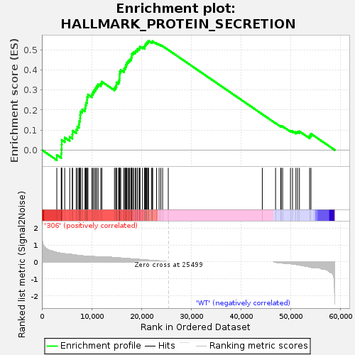
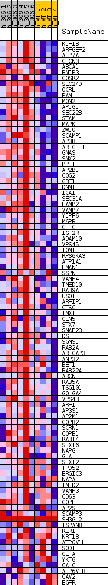
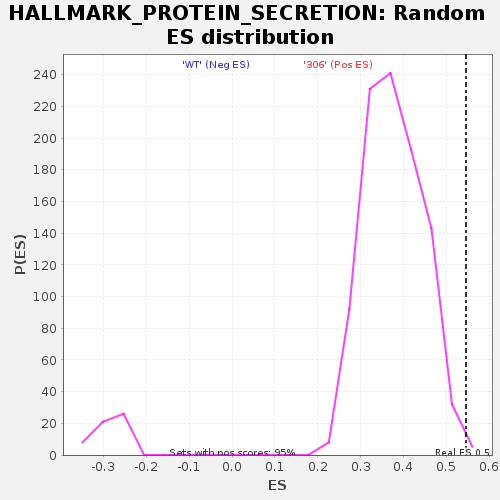

| | | Dataset | 306_WT_express.306_WT.cls#306_versus_WT |
| Phenotype | 306_WT.cls#306_versus_WT |
| Upregulated in class | 306 |
| GeneSet | HALLMARK_PROTEIN_SECRETION |
| Enrichment Score (ES) | 0.5458128 |
| Normalized Enrichment Score (NES) | 1.4469746 |
| Nominal p-value | 0.0031746032 |
| FDR q-value | 0.04376147 |
| FWER p-Value | 0.165 |
Table: GSEA Results Summary

Fig 1: Enrichment plot: HALLMARK_PROTEIN_SECRETION
Profile of the Running ES Score & Positions of GeneSet Members on the Rank Ordered List
| SYMBOL | TITLE | RANK IN GENE LIST | RANK METRIC SCORE | RUNNING ES | CORE ENRICHMENT | | 1 | KIF1B | NNN | 2997 | 0.557 | -0.0254 | Yes |
| 2 | ARFGEF2 | NNN | 3886 | 0.504 | -0.0173 | Yes |
| 3 | ATP7A | NNN | 3943 | 0.500 | 0.0047 | Yes |
| 4 | CLCN3 | NNN | 3970 | 0.499 | 0.0273 | Yes |
| 5 | ABCA1 | NNN | 3988 | 0.498 | 0.0499 | Yes |
| 6 | BNIP3 | NNN | 4589 | 0.482 | 0.0618 | Yes |
| 7 | GOSR2 | NNN | 5593 | 0.459 | 0.0659 | Yes |
| 8 | SEC24D | NNN | 6112 | 0.434 | 0.0771 | Yes |
| 9 | OCRL | NNN | 6169 | 0.431 | 0.0960 | Yes |
| 10 | PAM | NNN | 6898 | 0.401 | 0.1020 | Yes |
| 11 | MON2 | NNN | 7131 | 0.393 | 0.1161 | Yes |
| 12 | AP1G1 | NNN | 7434 | 0.380 | 0.1285 | Yes |
| 13 | SEC22B | NNN | 7511 | 0.377 | 0.1446 | Yes |
| 14 | STAM | NNN | 7673 | 0.372 | 0.1589 | Yes |
| 15 | MAPK1 | NNN | 7707 | 0.372 | 0.1755 | Yes |
| 16 | ZW10 | NNN | 7748 | 0.371 | 0.1919 | Yes |
| 17 | SCAMP1 | NNN | 8105 | 0.361 | 0.2024 | Yes |
| 18 | AP3B1 | NNN | 8662 | 0.350 | 0.2090 | Yes |
| 19 | ARFGEF1 | NNN | 8769 | 0.348 | 0.2232 | Yes |
| 20 | GNAS | NNN | 8879 | 0.344 | 0.2372 | Yes |
| 21 | SNX2 | NNN | 9082 | 0.338 | 0.2493 | Yes |
| 22 | PPT1 | NNN | 9092 | 0.337 | 0.2646 | Yes |
| 23 | AP2B1 | NNN | 9263 | 0.332 | 0.2770 | Yes |
| 24 | COG2 | NNN | 10056 | 0.326 | 0.2785 | Yes |
| 25 | GBF1 | NNN | 10262 | 0.321 | 0.2898 | Yes |
| 26 | DNM1L | NNN | 10519 | 0.316 | 0.3000 | Yes |
| 27 | ICA1 | NNN | 10792 | 0.308 | 0.3096 | Yes |
| 28 | SEC31A | NNN | 11015 | 0.303 | 0.3197 | Yes |
| 29 | LAMP2 | NNN | 11307 | 0.294 | 0.3283 | Yes |
| 30 | VAMP7 | NNN | 11832 | 0.280 | 0.3322 | Yes |
| 31 | YIPF6 | NNN | 12049 | 0.274 | 0.3412 | Yes |
| 32 | M6PR | NNN | 14580 | 0.259 | 0.3100 | Yes |
| 33 | CLTC | NNN | 14840 | 0.252 | 0.3172 | Yes |
| 34 | IGF2R | NNN | 14981 | 0.250 | 0.3263 | Yes |
| 35 | ADAM10 | NNN | 15001 | 0.249 | 0.3375 | Yes |
| 36 | VPS45 | NNN | 15406 | 0.239 | 0.3416 | Yes |
| 37 | TOM1L1 | NNN | 15534 | 0.238 | 0.3504 | Yes |
| 38 | RPS6KA3 | NNN | 15604 | 0.236 | 0.3601 | Yes |
| 39 | ATP1A1 | NNN | 15613 | 0.236 | 0.3708 | Yes |
| 40 | LMAN1 | NNN | 15650 | 0.235 | 0.3810 | Yes |
| 41 | SSPN | NNN | 15682 | 0.234 | 0.3913 | Yes |
| 42 | VAMP4 | NNN | 15839 | 0.230 | 0.3992 | Yes |
| 43 | TMED10 | NNN | 16475 | 0.215 | 0.3983 | Yes |
| 44 | RAB9A | NNN | 16535 | 0.214 | 0.4071 | Yes |
| 45 | USO1 | NNN | 16763 | 0.208 | 0.4128 | Yes |
| 46 | ARFIP1 | NNN | 16856 | 0.206 | 0.4207 | Yes |
| 47 | CTSC | NNN | 16968 | 0.203 | 0.4282 | Yes |
| 48 | TMX1 | NNN | 17039 | 0.201 | 0.4362 | Yes |
| 49 | CLN5 | NNN | 17265 | 0.196 | 0.4414 | Yes |
| 50 | STX7 | NNN | 17473 | 0.191 | 0.4467 | Yes |
| 51 | SNAP23 | NNN | 17650 | 0.187 | 0.4523 | Yes |
| 52 | DST | NNN | 17924 | 0.185 | 0.4561 | Yes |
| 53 | SGMS1 | NNN | 17975 | 0.184 | 0.4637 | Yes |
| 54 | RAB2A | NNN | 18054 | 0.182 | 0.4708 | Yes |
| 55 | ARFGAP3 | NNN | 18055 | 0.182 | 0.4791 | Yes |
| 56 | ANP32E | NNN | 18247 | 0.177 | 0.4840 | Yes |
| 57 | BET1 | NNN | 18457 | 0.172 | 0.4884 | Yes |
| 58 | RAB22A | NNN | 18785 | 0.164 | 0.4903 | Yes |
| 59 | ARCN1 | NNN | 18878 | 0.162 | 0.4962 | Yes |
| 60 | RAB5A | NNN | 19178 | 0.155 | 0.4983 | Yes |
| 61 | TSG101 | NNN | 19195 | 0.154 | 0.5051 | Yes |
| 62 | GOLGA4 | NNN | 19553 | 0.147 | 0.5058 | Yes |
| 63 | VPS4B | NNN | 19585 | 0.146 | 0.5119 | Yes |
| 64 | ARF1 | NNN | 19723 | 0.144 | 0.5162 | Yes |
| 65 | AP3S1 | NNN | 20215 | 0.132 | 0.5139 | Yes |
| 66 | AP2M1 | NNN | 20655 | 0.121 | 0.5120 | Yes |
| 67 | COPB2 | NNN | 20666 | 0.121 | 0.5174 | Yes |
| 68 | SCRN1 | NNN | 20701 | 0.120 | 0.5223 | Yes |
| 69 | COPB1 | NNN | 20838 | 0.117 | 0.5254 | Yes |
| 70 | RAB14 | NNN | 20852 | 0.116 | 0.5305 | Yes |
| 71 | STX16 | NNN | 21038 | 0.112 | 0.5325 | Yes |
| 72 | NAPG | NNN | 21101 | 0.110 | 0.5366 | Yes |
| 73 | GLA | NNN | 21294 | 0.106 | 0.5382 | Yes |
| 74 | STX12 | NNN | 21402 | 0.103 | 0.5411 | Yes |
| 75 | TPD52 | NNN | 21405 | 0.103 | 0.5458 | Yes |
| 76 | ERGIC3 | NNN | 22008 | 0.089 | 0.5397 | No |
| 77 | NAPA | NNN | 22224 | 0.083 | 0.5398 | No |
| 78 | TMED2 | NNN | 22238 | 0.082 | 0.5434 | No |
| 79 | VAMP3 | NNN | 23046 | 0.069 | 0.5328 | No |
| 80 | CD63 | NNN | 23556 | 0.060 | 0.5269 | No |
| 81 | COPE | NNN | 23898 | 0.050 | 0.5235 | No |
| 82 | AP2S1 | NNN | 24260 | 0.040 | 0.5192 | No |
| 83 | SCAMP3 | NNN | 25393 | 0.006 | 0.5002 | No |
| 84 | SH3GL2 | NNN | 44289 | 0.000 | 0.1785 | No |
| 85 | TSPAN8 | NNN | 46952 | -0.018 | 0.1339 | No |
| 86 | RER1 | NNN | 47975 | -0.051 | 0.1189 | No |
| 87 | KRT18 | NNN | 48082 | -0.055 | 0.1196 | No |
| 88 | ATP6V1H | NNN | 48375 | -0.067 | 0.1177 | No |
| 89 | SOD1 | NNN | 49943 | -0.103 | 0.0958 | No |
| 90 | CLTA | NNN | 50355 | -0.116 | 0.0942 | No |
| 91 | YKT6 | NNN | 51041 | -0.146 | 0.0892 | No |
| 92 | GALC | NNN | 51369 | -0.160 | 0.0910 | No |
| 93 | ATP6V1B1 | NNN | 51748 | -0.177 | 0.0927 | No |
| 94 | CAV2 | NNN | 53794 | -0.294 | 0.0714 | No |
| 95 | EGFR | NNN | 54063 | -0.310 | 0.0811 | No |
Table: GSEA details [plain text format]

Fig 2: HALLMARK_PROTEIN_SECRETION
Blue-Pink O' Gram in the Space of the Analyzed GeneSet

Fig 3: HALLMARK_PROTEIN_SECRETION: Random ES distribution
Gene set null distribution of ES for HALLMARK_PROTEIN_SECRETION